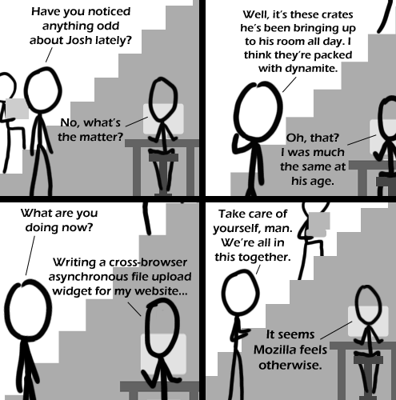

Comic JK 469
When I Feel Like It
⇤
<
?
>
⇥

⇤
<
?
>
⇥
Forum
.
RSS
.
Digg
.
Facebook
.
Reddit
.
Twitter
.
Stumbleupon
Enter your thoughts on number over 9000!!! here. Please, no spamming, trolling, or suicide bombing. Your mother's still stuck using Firebird. 469 is one more than 469! >Don't be a fucking retard - Negative Twoth >>Negative twoth is quite a bitch... >>>More like niggative twoth - Positive Twoth >>>>Racism, or a reference that went over my head? >>> If Comic 469 ≺ Comic 1 and Comic 1 ∈ Comic JK, then Comic 469 ∈ Comic JK. >>>>get out of here with those posing errors. "Why do you think they're packed with dynamite?" "They're red and have ACME on the side in big letters." >Man... That sure sounds Infernal! I see two copy/pasted heads, and one transparent head. >Why is everyone obsessed with copy/pasted heads? So it makes his job a bit easier and doesn't affect the comic at all. What's wrong with that? >>When the previous commenter stated being able to "see two copy/pasted heads, and one transparent head." , maybe it wasn't a comment about the comic, but a sudden realisation about the other people in the room... ? >>>"What a nice webcom- clones! Assassins!" >>>>Transparent Ass-ass-ass-ass-ass-ass-ass-assins! D: >>>> Heeheehee, he said ass! >>>>> Copy/pasted asses! >>>>> I see two Copy pasted "ss"s, and one Transparent Assassins. (Yes, these ss in Assassins were cnped.) I suspect most people with a genital vivisection will find it difficult to win a pissing contest. > More copy/pasted asses - with extras! Why does the guy in the last panel say that mozilla feels otherwise? Shouldn't it be Microsoft who break the standards > It often happens that everything works fine in IE 7 & 8, Opera, Safari and Chrome, but that Firefox's throwing a hissyfit for some unexplicable reason. I even had some code work in Firefox for Windows but not in Firefox for Mac, even though both were the same version. >>Recent versions of FF have been kind of sucky - hopefully FF4 will fix that... >>>menstruating'd be more likely to have good results >>>>True... You're welcome for my name- Josh